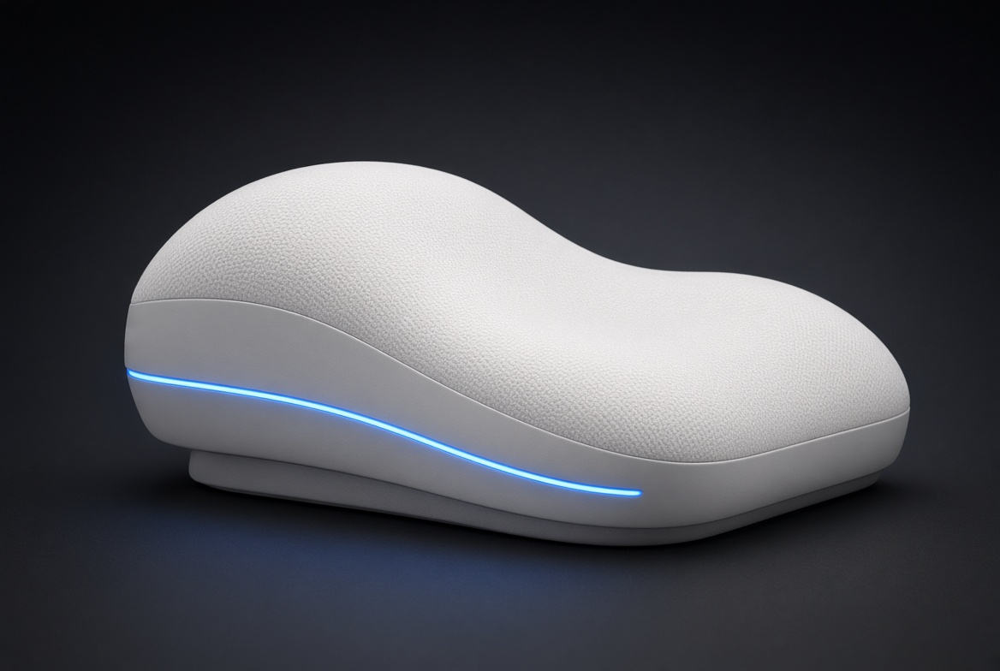
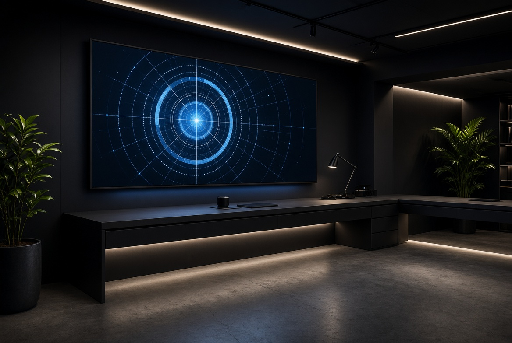

Start with people.
Useful innovation begins with real needs, not impressive-sounding technology.
We connect imagination, artificial intelligence and practical product thinking — shaping early ideas into experiences and opportunities that matter.
Yiang is an independent creative intelligence studio exploring how thoughtful ideas and emerging technology can make everyday life better.
We work across AI applications, digital experiences, product concepts and commercial storytelling. Rather than chasing technology for its own sake, we look for human problems worth solving — then shape clear, testable ways forward.
How we think and work↗Useful innovation begins with real needs, not impressive-sounding technology.
We bring product, technology, experience and business into one coherent picture.
Clear assumptions, honest status and small practical steps beat empty promises.
A portfolio of independent projects at different stages — from active service work to early product concepts. Each is presented with its current status, not an imagined finish line.

PROJECT 01 / FLAGSHIP CONCEPT↗An intelligent sleep-system concept exploring how AI, sensing and adaptive physical support could work together to create more responsive sleep experiences.
The project is in concept and strategic-development stage. It is open to discussions with experienced hardware, manufacturing and AI partners around feasibility, joint development, licensing or a broader project transfer. No commercial hardware prototype or clinical validation is being claimed.
A China-focused wellness and cultural journey platform for domestic users, bringing together city discovery, local experiences and practical planning.
An information and experience-planning product — not a medical diagnosis service and not a substitute for professional care.
Visit the site↗A cross-platform office assistant concept designed to turn natural-language instructions into useful Word documents, spreadsheets and presentations.
Currently in product research and MVP planning. The goal is to make everyday office work easier for people who do not want to wrestle with complex software.
Discuss this project↗
03 / DELIVERYA practical delivery line for presentations, resume refinement and business-plan materials — combining AI-assisted workflows with human review and polishing.
Focused on clear structure, readable design and useful deliverables. Scope and turnaround are agreed before work begins.
Ask about services↗Project stages are described as they are today. Concepts, research and internal tools are not presented as launched products or validated technologies.
Different projects need different kinds of progress. These are the ways Yiang can contribute and collaborate.
Opportunity framing, user scenarios, feature definition and early product direction.
Clear presentations, structured proposals and communication materials for real decisions.
Lightweight websites, useful automation ideas and practical cross-platform workflows.
Connecting promising concepts with technical, manufacturing and commercial partners.
Define the real problem, intended user and desired outcome.
Turn the idea into a focused concept, scope and set of assumptions.
Use lightweight prototypes, content or workflow tests to learn quickly.
Identify the right next step — delivery, partnership, licensing or further research.
We welcome thoughtful conversations with people building useful things — founders, technology teams, manufacturers and potential partners.
For project enquiries, please include a short introduction, the challenge and the kind of collaboration you have in mind.